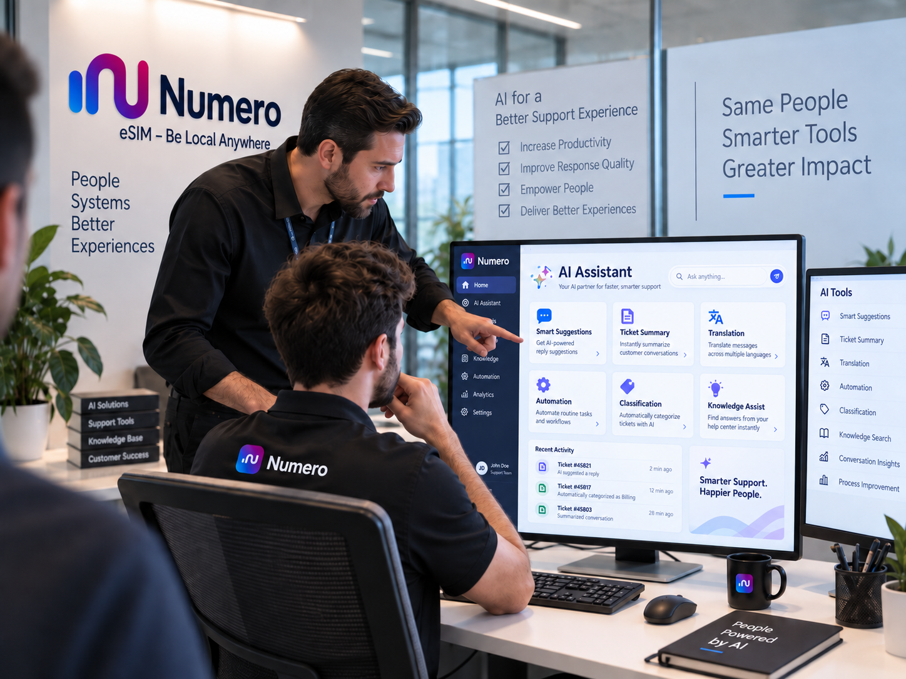

AR OFF
VOICE ON
PAUSE
HEAD OF CUSTOMER SUPPORT · NEW AREA
AI Department · Under Development
A new support department currently being planned, built and tested.

NEW DEVELOPMENT AREA
AI Integration & Operational Improvement
Building practical AI and automation into the support operation where they add real value.
VISITOR